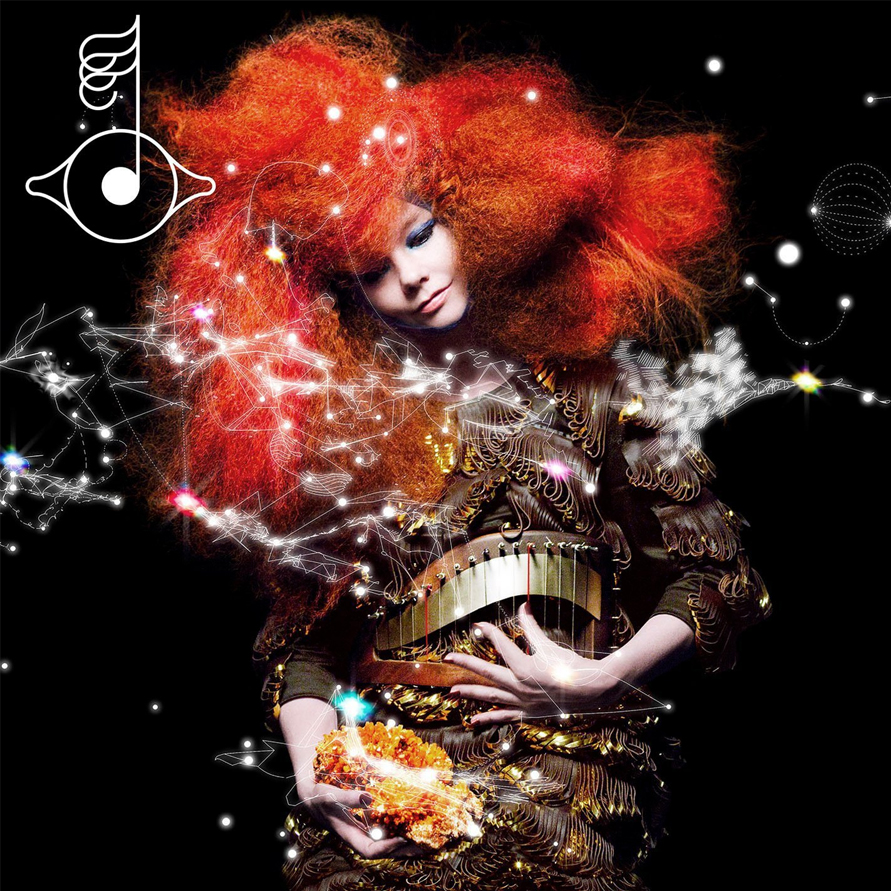

Today's Pick
Björk - Biophilia
Björk composed it as a concept album during the 2008–2011 Icelandic financial crisis, exploring the links between nature, music and technology. Billed as the first "app album", Biophilia is a multimedia project released alongside a series of apps linking the album's themes to musicology concepts. It was followed by a series of educational workshops in four continents.
Biophilia received critical acclaim and was named one of the best albums of 2011 by several publications; it was nominated for two awards at the 55th Grammy Awards in 2013, winning ‘Best Recording Package’. It debuted in the top 40 of every chart it entered worldwide, topping the Taiwan chart and peaking in the top 5 in Iceland, France and Denmark. In 2014, Biophilia became the first app included in the permanent collection of the Museum of Modern Art in New York.
Biophilia grew from Björk's interest in nature and concerns about the environment. In June 2008, she performed a concert with the Icelandic band Sigur Rós to raise awareness about the use of Iceland's natural resources in aluminium melting plants. She founded the Náttúra organisation to promote Icelandic nature and grassroots industries.
New musical instruments were specially developed for the album. The Tesla coil was used as a musical instrument on the song ‘Thunderbolt’. The ‘gameleste’, a mixture between a gamelan and a celesta which was programmed in order to be played remotely by a tablet computer, was used in ‘Crystalline’ and ‘Virus’. A group of pendulums were put together, creating patterns with their moves, transmitting the movements of the Earth to the sound of a harp, making the song ‘Solstice’.